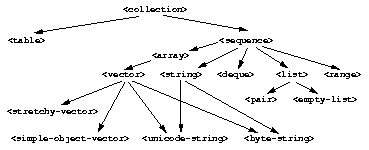

11.1 Built-in collection classes
Figure 11.1 shows the most common Dylan collection classes.
 |
A collection holds a group of objects, called elements. Each element is associated with a key. Each class of collection can have different restrictions on keys or elements.
Sequences are an important subclass of collections. Sequences restrict their keys to be nonnegative integers starting at 0, and increasing by one for each additional value in the collection. Arrays, vectors, strings, and lists are sequences. Instances of <string> are sequences that can hold only characters. You can access instances of <array> using several subscripts. Instances of <vector> are one-dimensional arrays. Instances of <simple-object-vector> can hold any kind of Dylan object. Instances of most subclasses of <vector> cannot change size; the exception is instances of <stretchy-vector>.